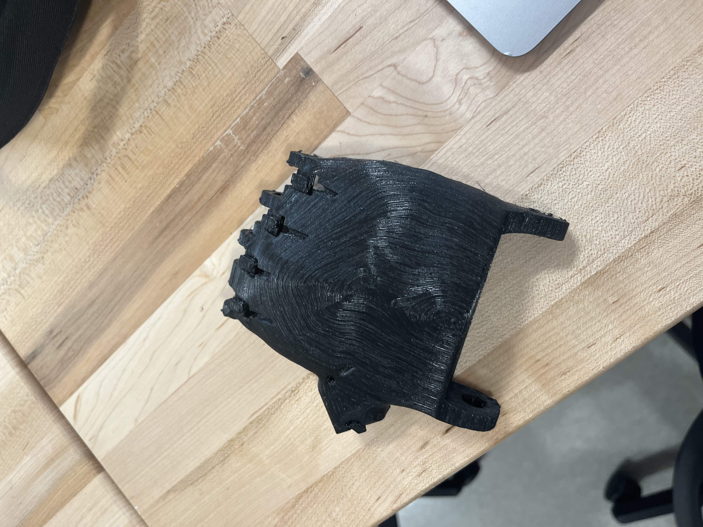
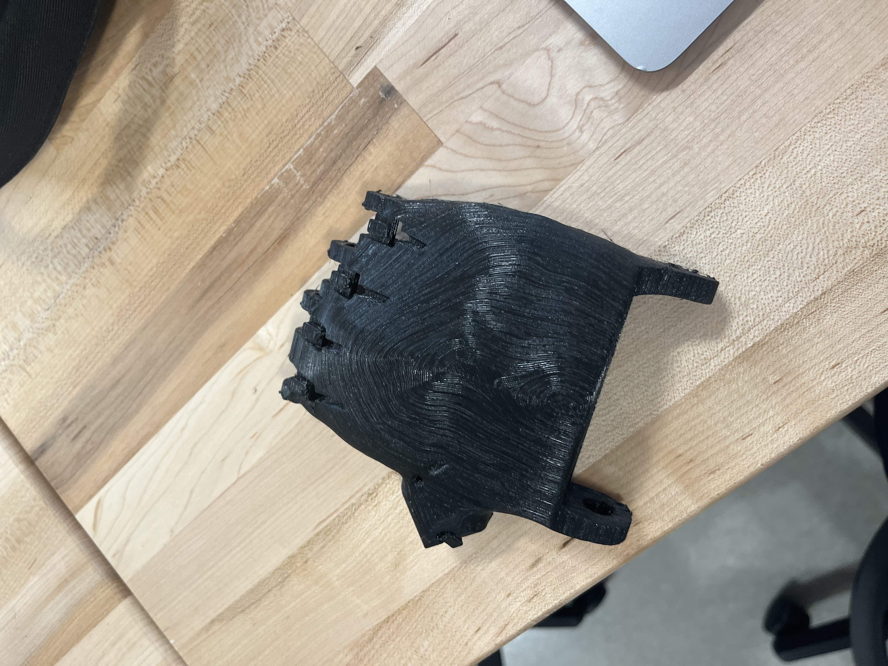

Clients
For this project, the class divided up into teams of about 3 students to design a problem solving tool for an actual client! There were many cool options for projects people chose to work on, some human and some animal. Also not all prosthetic. My team chose to work on designing a 3D printed, adaptable, upper limb prosthesis, specifically for a child, between ages 6-12, who would like to participate in sports or physical activity. As student athletes, we felt this project would be especially meaningful to help kids who were like us, but with a limb difference. Above is an image of our Client Liability Form. Although we know what we want to do, finding a client is quite a challenging process.


Contacts
To start finding a client, my team looked at a few different places. We made a few different templates, talking about our work as students, our mission, an example of our working e-NABLE hand, and asking if they had or knew of anyone who may have a child with an upper limb difference that we may be able to help. First we reached out to the Boston Children’s hospital, specifically, the Prosthetics and Orthotics branch. We were only able to leave a message with a receptionist. Worried this would be a dead end, one member of my team went to their website and contacted each individual member to explain our mission. Next, I contacted the local sports organizations around us, including children’s hockey, softball, baseball, skiing, and more. A few coaches replied that they were not aware of any children in their program with an upper limb difference but would keep us in mind if they heard of anyone fitting our profile. Another member of the group reached out to principals of local schools in the area in hopes that they would know of a student we could help. So far, this has also been a dead end. My team and I also went to the e-NABLE hub to post our working Phoenix V3 hand, as well as explain our project to see if anyone there would connect with us. We had one person reach out, however, not quite in our scope, so we may pass him along to a different team in our class who he may be better suited for. As of now, we are still looking for a client.


Meetings
Although we don’t have a client yet, we do have a few meetings set up! On Monday, we met with e-NABLE founder Jon Schull to get some advice on finding clients. He pointed us towards a few groups, the Lucky Fin organization and the Helping Hands Group. Although he didn’t have a direct answer for us, he gave us direction and more contacts to email. When looking on e-NABLE, we found an open source device posted for someone with an upper limb difference to hold a bat and to hold a golf club! Perfect for what we want to do. We reached out to the person who posted his devices, and it turns out the creator is a high school engineering teacher and his students made the device for a little girl to play softball and a high school classmate to play golf. This Thursday we will be meeting with him to discuss his design process, problems, and see if he potentially knows of another client we could possibly assist. Questions we came up with to ask include: what was most important to your client, how does the wrist move, and where is the NinjaFlex most useful. Finally, the Boston Prosthetics and Orthotics group responded to us that they would be interested in the possibility of partnering together for our project! This is so exciting, we are also planning to meet with them on Thursday. Questions we have for them include the process of fitting a prosthetic to a client and designing prosthetics for specific needs, such as withstanding the force of hitting a ball.


Design Thinking
With our client profile in mind, we began to brainstorm what we should and could possibly design. First we used an empathy map. An empathy map is a way of brainstorming what is important about the device from the perspective of the client. We said our client would say things like “I wish I could go play with my friends”, “I’ll watch over here while you guys play”. They might think “why can’t I be like other kids”, or “I love playing games with my friends, I wish I could do that sport with them too”. On a daily basis, they would probably go to school, play outside during recess, maybe sit out of certain activities due to their upper limb difference, hangout with friends, and go to extracurriculars after school. This child may feel left out from group sports activities, they may feel excited when they can go practice or play a sport, they may be frustrated that they can’t participate in the same things their friends can. From this brainstorm, my team decided the thing that is most important to our client is the ability to fit in and play like other kids can. Next, we looked at a feasibility versus importance graph. Here we gave our ideas ranks 1-10, with 10 being the most feasible and most important. We began to think about what we could design for different sports, since we don’t have a specific client yet. Things like throwing a ball could be higher importance, depending on the sport, but lower feasibility due to force and wrist movement. Then we discussed gripping things such as golf clubs, hockey sticks, or bats. We felt that this could be of high importance as most sports use sticks of some sort, as well as feasible since it will mainly depend on a gripping mechanism. Other ideas we had were an adapter for riding a bike to grip the steering wheel. This is high feasibility but most likely not as important if the client doesn’t need to ride a bike. As a team, we plan on designing a set grip hand design with an interchangeable attachment for different stick types that would need to be held for different sports. Our design will allow a child to participate in a variety of sports so they can be included with their friends.
 

Prototypes
In order to work with clients, we need to bring some examples of what we can provide for our client. To start, we have our 3D printed Phoenix V3 hands. A video of this working has already been sent to our potential clients, however, it would be great to have them try it on to see how it fits and what adjustments would need to be made. The other idea we wanted to try was 3D printing a hand with the NinjaFlex material, creating a more flexible hand. We think this could be great for the safety reasons of a child participating in sports. Our last prototype at the moment, is the golf grip device provided to us on the e-NABLE hub from the MA high school teacher. This will allow us to see the way in which the grip will work and for different sports sticks. We hope to try printing the bat arm as well, then maybe again with different parts in the NinjaFlex to see how well it holds together under force.

Reflection and Future Steps
For this project, it seems that finding the client is the rate determining step. While we have an idea of who we are helping, it's difficult to design specifically for a purpose without fully knowing the extent of the problems we are trying to solve. I think we’ve made great progress and we are excited to meet with our contacts this Thursday as we think it will open doors and opportunities. I’m stoked with the possibility of working with the children's hospital and I hope we can partner with them for this project.